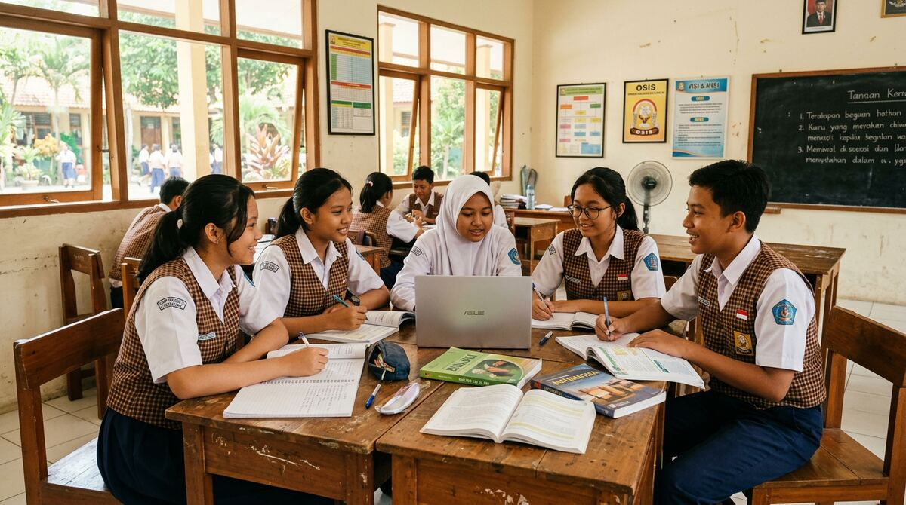
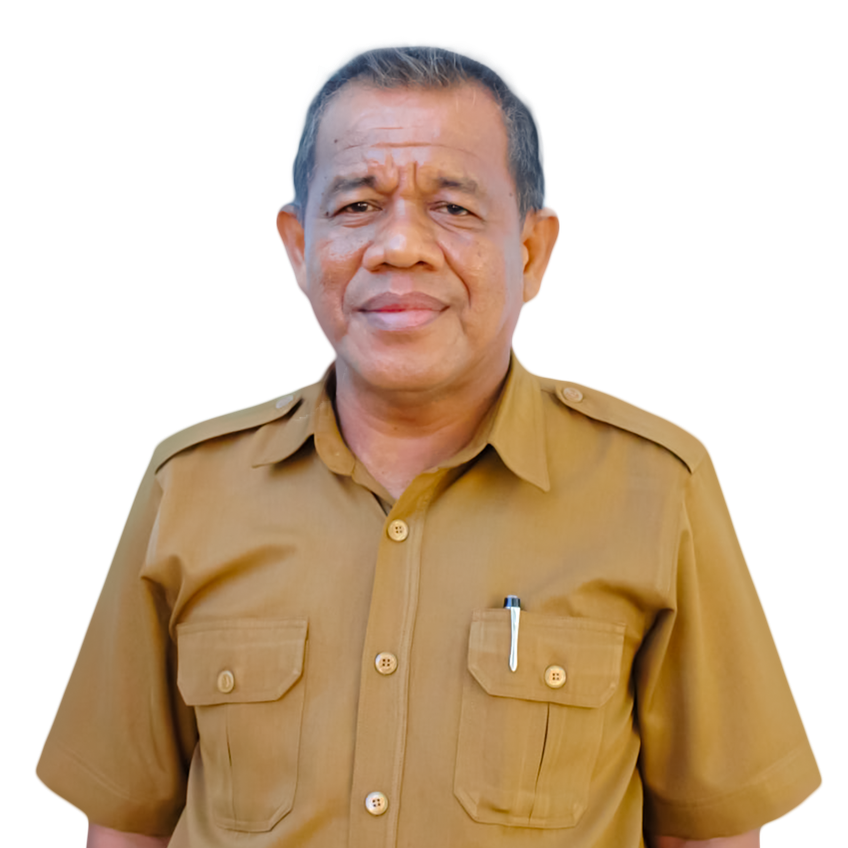
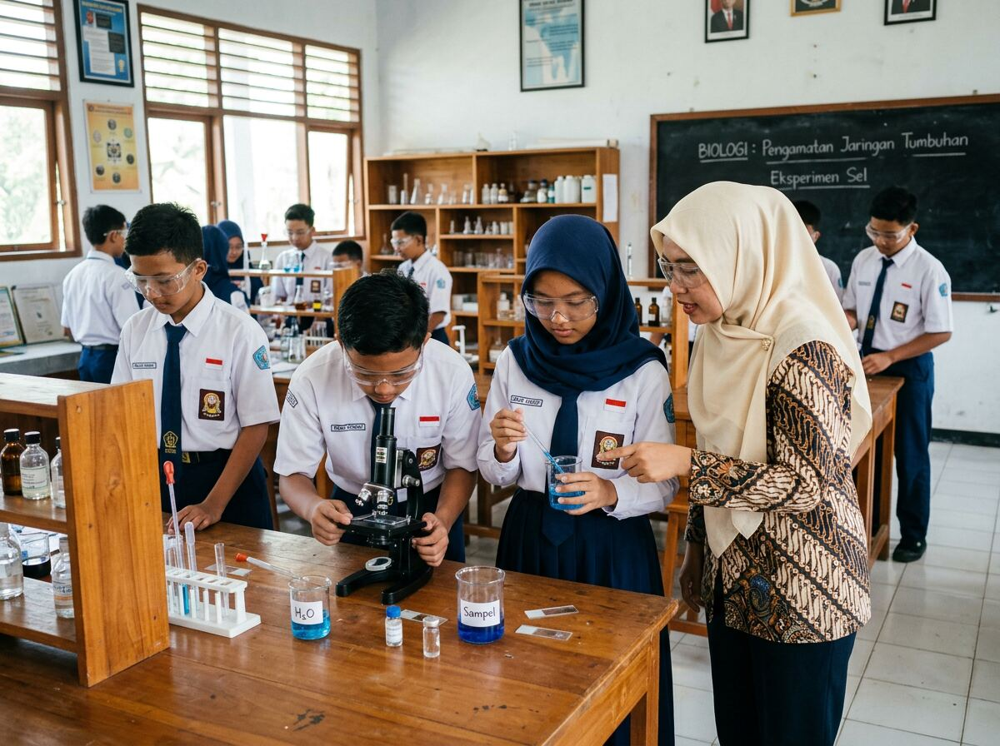

WK
Wakasek Kurikulum
Kurikulum MerdekaKoordinator pembelajaran & asesmen
Mengenal lebih dekat SMP Labschool UNTAD — sejarah, visi misi, struktur, tenaga pendidik, dan fasilitas kami.
SMP Labschool UNTAD adalah sekolah menengah pertama di bawah Yayasan Bungamputi Universitas Tadulako, Kota Palu. Sebagai labs school, sekolah kami menjadi tempat pengembangan dan penerapan praktik pembelajaran yang selaras dengan dunia pendidikan tinggi.
Pembelajaran diselenggarakan dengan Kurikulum Merdeka, penekanan pada pembiasaan akhlak, serta pengalaman belajar berbasis praktik — dari laboratorium IPA hingga proyek sederhana di kelas. Sekolah kami terakreditasi A dan terus mengembangkan program literasi dan riset remaja.
Amir, S.Ag., M.Pd.I.
Jam layanan Tata Usaha:
Senin – Jumat, 07.00 – 15.30 WITA

“Terwujudnya lulusan yang berakhlak mulia, berprestasi, literat, dan mampu bersaing di jenjang pendidikan berikutnya, dengan tetap berakar pada nilai budaya bangsa.”
Menyelenggarakan pembelajaran bermakna dan berdiferensiasi agar setiap siswa mencapai potensi terbaiknya.
Membiasakan akhlak mulia, kedisiplinan, dan kepedulian sosial melalui keteladanan dan kegiatan sekolah.
Mengembangkan budaya membaca, kemampuan riset sederhana, dan pemanfaatan teknologi secara bijak.
Yayasan pendidikan yang terhubung dengan Universitas Tadulako, Palu.
Menjadi tempat praktik pembelajaran, riset pendidikan, dan pengembangan inovasi kelas.
Menerapkan pembelajaran berdiferensiasi, asesmen autentik, dan proyek profil pelajar Pancasila.
Penguatan perpustakaan, laboratorium, serta pembinaan ekstrakurikuler akademik dan non-akademik.

Nama wakasek dan pembina dapat dilengkapi sesuai data resmi sekolah.
38 guru dan staf yang mendampingi siswa setiap hari dalam pembelajaran maupun kegiatan sekolah.

Memimpin SMP Labschool UNTAD dengan fokus pada penguatan akhlak, literasi, dan pembelajaran yang berpusat pada siswa.
Latar belakang pendidikan agama dan manajemen pendidikan · Yayasan Bungamputi Universitas Tadulako
Koordinator pembelajaran & asesmen
Pembina OSIS & ekstrakurikuler
Pendampingan akademik & pribadi
Data lengkap guru dan tenaga kependidikan dapat dilihat pada papan informasi sekolah atau diminta melalui Tata Usaha.


Tur sekolah dibuka setiap Sabtu pukul 09.00 WITA dengan pemandu guru.